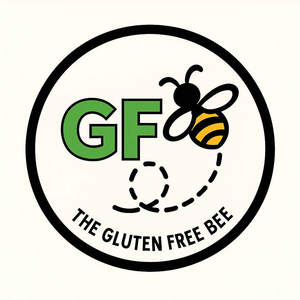

Trade Mark Journal No.2025/040 3 October 2025
UK00004266095 18 September 2025 (16,18,21,25,35,41)

- Class 16
- Recipe cards; printed guides; educational booklets; stickers; posters; notebooks; journals; printed matter relating to gluten-free living; printed promotional materials; flyers; leaflets; greeting cards; calendars; planners; packaging materials made of paper or cardboard; labels of paper or cardboard .
- Class 18
- Tote bags.
- Class 21
- Mugs; bowls; lunchboxes; food containers; kitchen utensils; chopping boards; mixing bowls; spatulas; whisks; storage jars; drinking bottles; travel mugs; reusable straws; baking trays; silicone baking mats; colanders; serving spoons; cooking spoons; food scoops .
- Class 25
- T-shirts; hoodies; aprons; sweatshirts; hats; beanies; caps; socks; slippers; leggings; jackets; scarves; gloves; branded clothing; gluten-free lifestyle apparel; headbands; bandanas; sportswear; casualwear; outerwear .
- Class 35
- Online retail services relating to kitchenware; online retail services relating to printed materials; online retail services relating to clothing and accessories; online retail services relating to gluten-free lifestyle products namely, tea towels, dishcloths, aprons, bags, jars, storage containers, cutlery, labels, recipe cards, meal planners, measuring spoons, timers, utensil holders, water bottles, notebooks, stickers, keyrings, badges, enamel pins, flashcards, checklists, fridge magnets with GF tips, calendars, affirmation cards and logo magnets; promotion of goods and services via social media; advertising services; marketing services; retail services connected with the sale of kitchen utensils, printed matter, clothing, and educational materials.
- Class 41
- Providing online educational content relating to gluten-free living; publication of digital guides and recipe books; organising workshops and events relating to gluten-free lifestyle; providing non-downloadable videos and tutorials in the field of gluten-free cooking and wellness; educational services relating to food safety and dietary awareness; online blogs and articles featuring gluten-free tips and resources; coaching and mentoring services in the field of gluten-free living .
Georgina Matthews